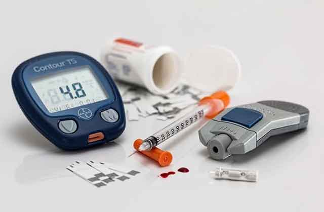

강아지도 수혈하는 시대! 혈액형이 있을까?
사람의 혈액형은 총 4가지. A형, B형, AB형 그리고 O형이 있습니다. 혈액을 구분하게 되면서 사람과 사람 사이에 더욱더 안전하게 수혈할 수 있게 됐습니다. 그렇다면 동물은 혈액형이 존재할까요? 동물도 수혈이 필요할 때, 혈액형을 구분해 수혈해야 하는지 궁금하지 않으신가요? 강아지도 수혈하는 시대! 혈액형을 구분하는지 알아볼게요.
사람마다 혈액형을 갖고 있듯이 동물들도 혈액형이 존재합니다. 그중에서도 사람과 유사한 조건을 가진 침팬지는 A, B, O형이 있다고 알려졌습니다. 원숭이는 사람과 유사한 A, B, AB, O형이 있습니다. 이 외에도 다양한 동물들이 여러 가지 형태로 혈액형을 갖고 있습니다. 예를 들면, 말은 8가지, 돼지는 15가지 정도 혈액형 종류가 있습니다. 동물도 혈액형을 갖고 있다는 게 조금 신기할 수 있습니다.
그렇다면 사람과 밀접한 생활을 하는 강아지도 혈액형이 있을까요? 지금까지 밝혀진 바로는 약 13개 정도의 혈액형이 있다고 알려졌습니다. 그렇다고 13개 모두 명확하게 판정할 수 있는 것은 아니며, 일부만이 구분할 수 있다고 합니다. 또, 밝혀진 혈액형의 절반 이상은 판정이 불가능한 것도 있다고 합니다. 일반적으로 강아지의 혈액형은 'DEA로 표현하고, DEA는 1.1부터 숫자 8까지 존재합니다.
강아지 혈액형이 사람과 구분되는 특징 중 하나는 사람의 혈액형은 한 종류로만 구성되어 있지만, 강아지 혈액형은 단일 구성은 아니라는 점입니다. 여러 가지 혈액형이 섞여 있을 수 있다는 것이죠. 따라서 혈액형을 정확하게 구분하기보다는 적혈구 표면의 항원 정도를 파악하는 게 중요하다고 합니다. 즉, 혈액형 두 개 이상이 섞여 있어서 수혈했을 때 거부반응을 일으키지 않는지만 적절하게 검사해 보는 것이 좋습니다.
사람은 같은 혈액형의 피가 아니면 혈액의 응고현상이 일어나지만, 강아지의 혈액은 응고현상이 잘 일어나지 않기 때문에 혈액형이 달라도 수혈할 수 있습니다. 다만, 첫 번째 수혈을 했을 때 항체가 만들어져서 두 번째 또 다른 혈액을 주입하게 되면, 항체에 대한 면역 거부 반응이 일어날 수 있습니다. 면역 거부 반응이 일어나면 저혈압, 구토, 경련 등의 증상이 나타날 수 있습니다.
일반적으로 강아지가 많이 가진 혈액형은 DEA 4라고 합니다. 다만, 앞서 말씀드린 내용처럼 혈액형을 정확하게 구분하기보다는 항원만 파악하기 때문에 지속적인 수혈이 필요할 때는 혈액이 응집하는지에 대한 검사를 확인한 후에 수혈하는 것이 도움됩니다. 또, 예기치 못한 사고로 혈액이 필요한 상황이 발생한다면 병원에서 잘 해결해 주겠지만, 기본적으로 반려동물도 혈액형이 있다는 사실을 안다면 더욱더 도움이 될 수 있을 것입니다.
[출처] 강아지도 수혈하는 시대! 혈액형이 있을까? ｜ 작성자 꼬미꼬미